Aalto’s Furniture & Lamps in Code
In an Aalto library, the furniture is not placed after the building is finished—the reading counters, lamps, handrails, and radial bookcases are built into the architecture itself.
Each piece below started by studying photographs and detail sheets to see how it actually mounts and joins, then writing a parametric Python builder to generate it across every floor.
The Parapet-Mounted Mushroom Reading Lamp
Our earliest model placed generic brass cone lamps on posts right on the desk. Looking closely at photographs of the Reading Well revealed a much smarter design: Aalto bolted the fixture to the outside of the parapet wall and cantilevered the arm over the birch curb, leaving every inch of writing surface clear.
- Zero desk footprint: A rectangular white steel channel bolts to the well-facing plaster face, completely off the black linoleum counter.
- 55° curb-clearing arm: A
21 mmwhite enameled tube rises vertically, bends~55°across the birch book-stop, and enters the upper shoulder of the shade horizontally. - Stepped anti-glare collar: Under the
12.1″oblate spun-aluminum dome sits a7.7″vertical cylindrical collar that shields readers across the well from bulb glare, plus an off-center brass pull-switch stem. - One function, three placements:
inward_sign = +1reaches inward on Level 3 (16 lamps),-1reaches outward on the Mezzanine (11 lamps), and a linear variant lights both stairwell bookcases (8 lamps).
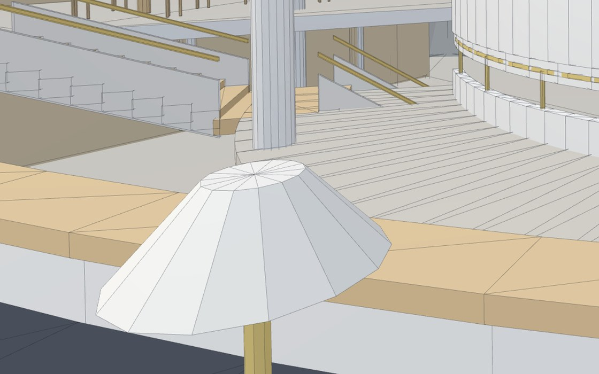
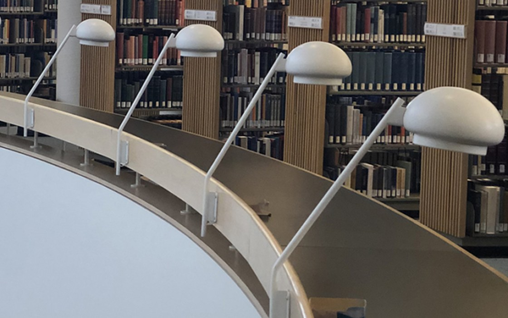
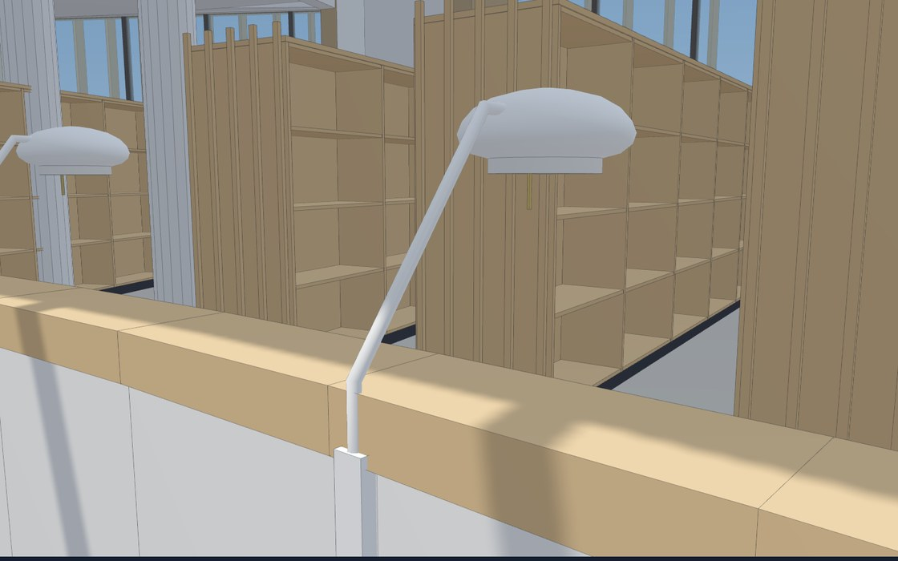
# 1. White tubular arm rising from the well-side bracket, angling ~55° over the birch curb arm_pts = [ (ox - 0.014 * ix, oy - 0.014 * iy, z_floor_m + 0.890), (ox - 0.014 * ix, oy - 0.014 * iy, z_floor_m + 1.005), (ox + 0.265 * ix, oy + 0.265 * iy, z_floor_m + 1.375), (ox + 0.350 * ix, oy + 0.350 * iy, z_floor_m + 1.375), # enters upper shoulder horizontally ] add_polytube_m(mesh, arm_pts, 0.0105, white_mat, sides=8) # 2. 12-point (radius_m, z_rel_m) solid of revolution: stepped collar -> 12.1" oblate dome shade_profile = [ (0.084, 0.012), (0.084, 0.000), (0.098, 0.000), # recessed diffuser & 7.7" collar lip (0.098, 0.026), (0.128, 0.034), (0.148, 0.050), # vertical anti-glare collar & step (0.154, 0.068), (0.146, 0.088), (0.128, 0.108), # smooth oblate mushroom equator (0.096, 0.126), (0.052, 0.138), (0.018, 0.143), # rounded spun-aluminum crown ] add_lathe_solid_m(mesh, dome_center, shade_profile, band_attrs=white_mat, bottom_attrs=glow_mat, top_attrs=white_mat, sides=18)
Cantilevered Linoleum Workbench & Steel Wall T-Brackets
Sweeping around both the Level 3 well rim (R = 44′-1″) and the Mezzanine outer arc (R = 31′-8″), the continuous reading counter pairs warm Finnish birch edges with a quiet, non-glare matte-black linoleum writing surface.
- Book-stop curb & bullnose: A
+3.9″solid birch cap crowns the plaster parapet to keep open books from sliding into the well, matched by a solid birch front bullnose. - Legless knee clearance: Photographs of the Mezzanine revealed white painted tubular steel T-brackets pinned into the plaster wall with two horizontal lugs (
+0.20 mand+0.48 m), eliminating floor legs altogether.
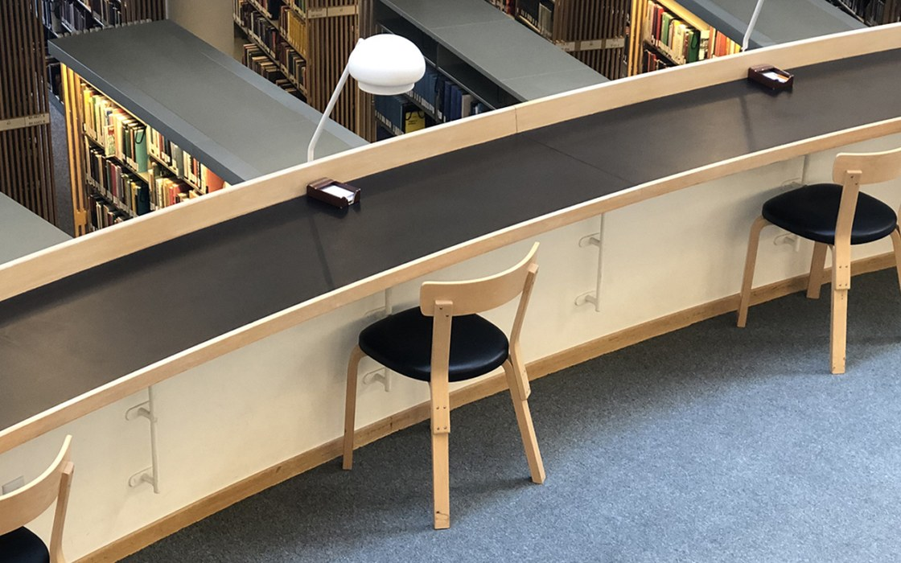
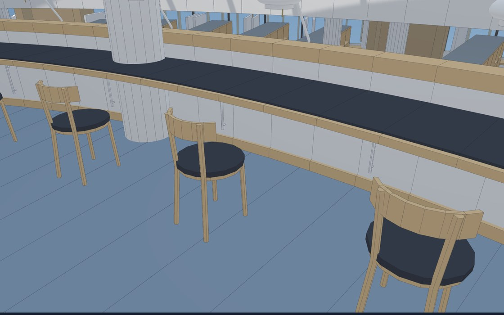
# Birch front bullnose + inset matte-black linoleum writing surface along the well arc add_arc_band_ft(mesh, G.WP3A, 29.40, r_in + 0.02, deg0, deg1, z_gal + 0.700, z_gal + 0.745, birch_furn) add_arc_band_ft(mesh, G.WP3A, 29.52, r_in - 0.03, deg0, deg1, z_gal + 0.745, z_gal + 0.758, lino_furn) # White tubular steel T-bracket + two horizontal wall-mounting lugs (z = +0.20 m, +0.48 m) add_polytube_m(mesh, [ (ox + 0.035 * sx, oy + 0.035 * sy, z_floor_m + 0.160), (ox + 0.035 * sx, oy + 0.035 * sy, z_floor_m + 0.685), (ox + 0.480 * sx, oy + 0.480 * sy, z_floor_m + 0.685), ], 0.011, white_mat, sides=6)
Artek Stool 60 vs. Reading Chair 69
Comparing photographs of the upper rim and the sunken gallery showed why Aalto specified two different bent-birch seats: backless stools up top to keep sightlines open across the well, and broad backrest chairs down below for longer study.
- Level 3 Rim — Stool 60: Three steam-bent birch L-legs (
60° + 120°k) under a circular birch and black-linoleum seat that tucks flush beneath the counter when unoccupied. - Mezzanine — Chair 69: Two front L-legs (
±42°) paired with two splayed rear stiles (±145°) rising into a114°curved steam-bent birch backrest band, each rotated slightly (−6°..+6°) so the row feels lived-in.
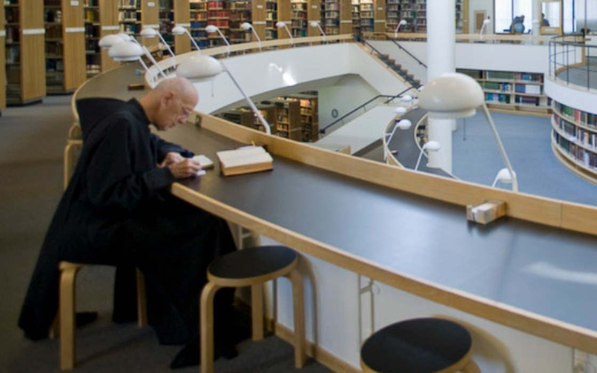
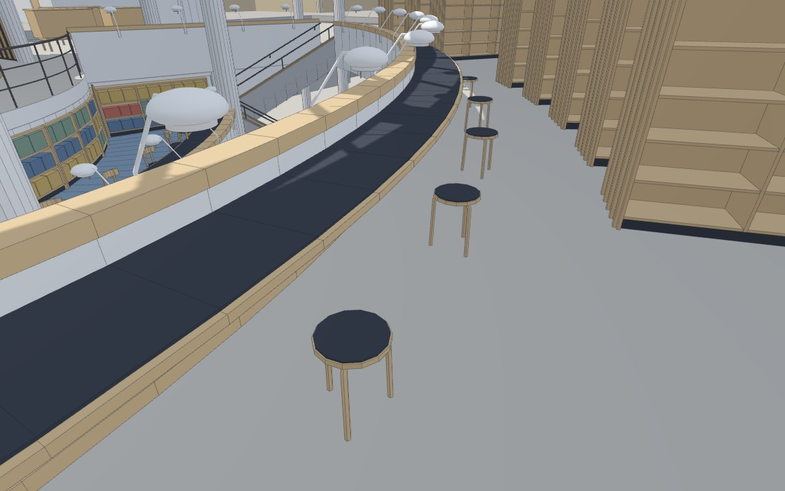
# Stool 60: birch seat disc + black linoleum pad + 3 steam-bent L-legs add_cylinder_ft(mesh, pt_ft, 0.175 / FT_TO_M, z_floor_m + 0.422, z_floor_m + 0.448, birch, sides=14) add_cylinder_ft(mesh, pt_ft, 0.168 / FT_TO_M, z_floor_m + 0.448, z_floor_m + 0.458, lino, sides=14) for k in range(3): ca, sa = math.cos(ang0 + k * 2 * math.pi / 3), math.sin(ang0 + k * 2 * math.pi / 3) add_polytube_m(mesh, [(cx+.178*ca, cy+.178*sa, z0), (cx+.166*ca, cy+.166*sa, z0+.39), (cx+.075*ca, cy+.075*sa, z0+.432)], 0.015, birch, sides=6) # Chair 69 adds rear splayed stiles (+/-145°) & a 114° steam-bent birch backrest band add_arc_band_ft(mesh, pt_ft, 0.214 / FT_TO_M, 0.232 / FT_TO_M, facing_deg + 123.0, facing_deg + 237.0, z_floor_m + 0.665, z_floor_m + 0.772, birch)
Radial Birch Bookcases & 5-Batten Directory Screens
Because the inner well is circular while the north curtain wall is faceted, almost every radial stack range has a different length. One parametric builder generates every bookcase across all three floors—adapting bay counts, canopy finishes, and end-slat screens automatically.
- 5-batten aisle stanchions: Five vertical birch slats (
1.2″ × 1.5″) frame the inner aisle face of each Level 3 range, rising3″above the canopy to carry call-number plaques. - Recessed plinth & dual canopies: Every stack sits on a
1.5″-inset dark kick plinth (Detail 10); Level 3 uses birch canopies, while Levels 1 & 2 switch to slate-grey laminate with a birch lip.
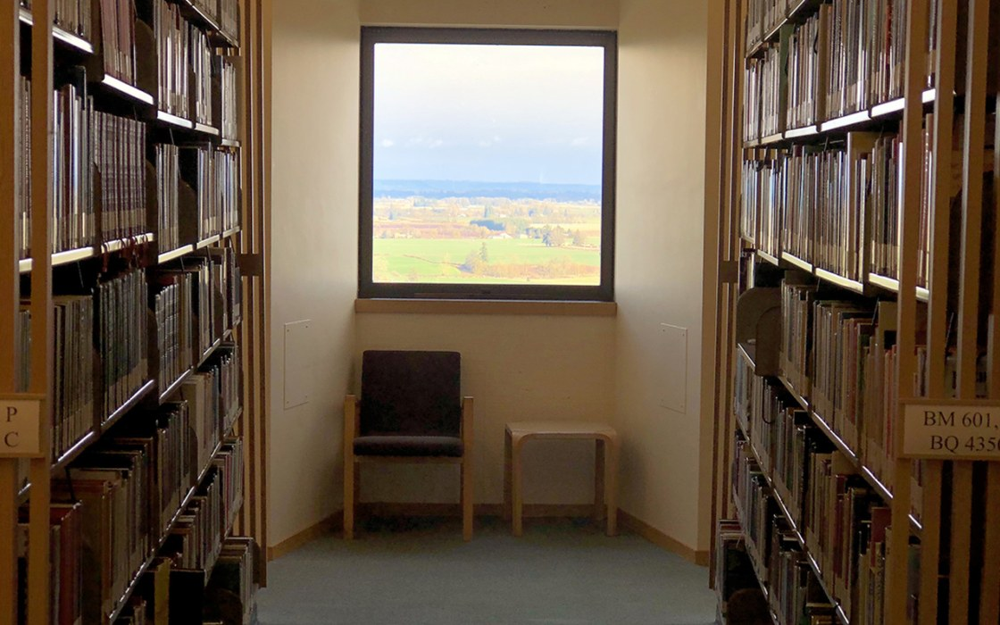
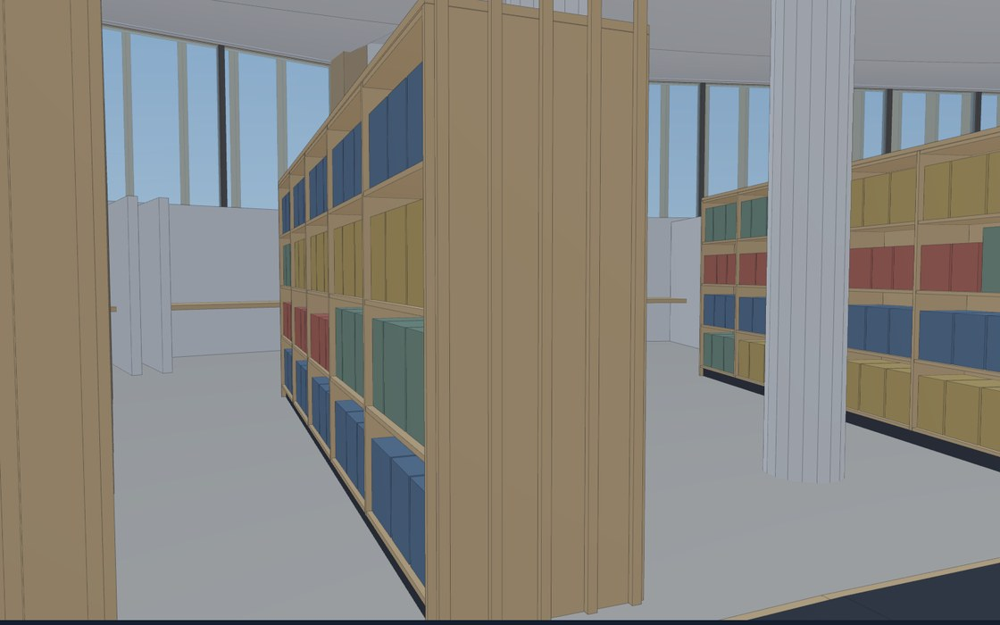
~3′-1″ bay dividers, 5-batten end screens, recessed kick plinth, and seeded book clusters.# 5 vertical birch battens spaced across stack depth, rising 3" (+0.075 m) above top canopy n_slats = 5 if double_sided else 3 slat_span = (2.0 * half_d) - 0.16 for k in range(n_slats): t_center = -0.5 * slat_span + k * (slat_span / (n_slats - 1)) _add_box_local_ft( mesh, cx, cy, ux, uy, nx, ny, s_face, s_face + sign * SLAT_DEPTH_FT, t_center - 0.5 * SLAT_WIDTH_FT, t_center + 0.5 * SLAT_WIDTH_FT, z_floor_m + PLINTH_HEIGHT_M, z_canopy_top + 0.075, birch_mat, )
Stairwell Dictionary Counters & Curved Reference Bookwall
Where the East and West switchback stairs drop from Level 3 to the Mezzanine, our first build placed ordinary open railings. Photographs showed Aalto turned both edges into 21′-1″ counter-height birch bookcases—creating standing consultation surfaces for dictionaries and atlases.
- Dual-sided stair wall: Smooth white plaster and a sloped stair cheek face the descending steps, while a 3-tier birch bookcase with an overhanging
+3′-1″counter top faces the reading room. - Curved Reference Bookwall: Across the well at
R = 22′-3″, a faceted 4-shelf birch arc wraps the base of the Control Peninsula beneath 42 chord segments.
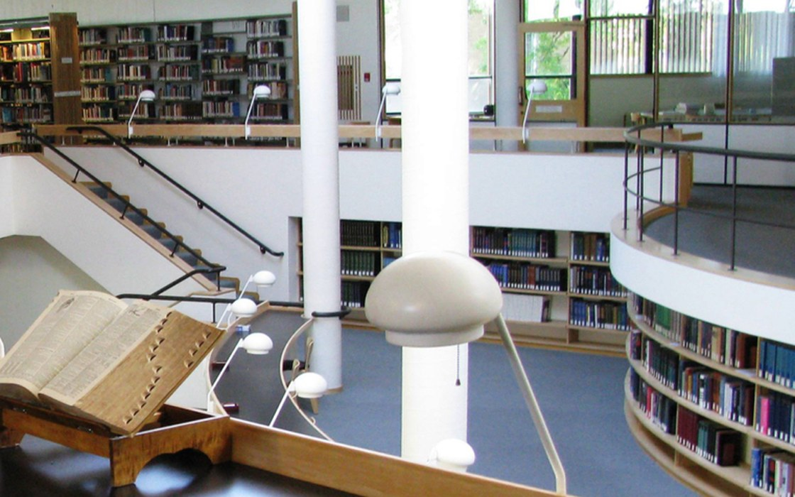
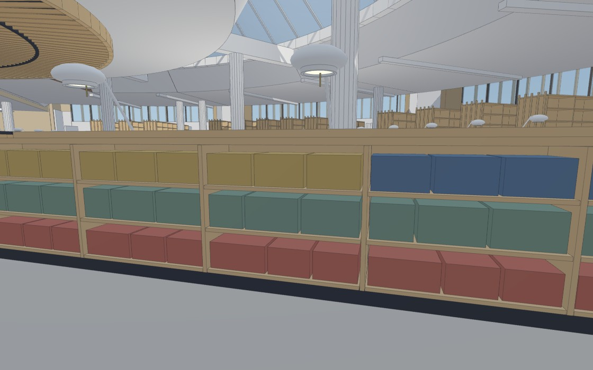
add_aalto_bookcase_ft(..., canopy_style="counter") backed by the plaster stair-cheek wall and 4 lamps.# Counter-height single-sided birch bookcase (height = 0.935 m / 3'-1") replacing open stair railing add_aalto_bookcase_ft( mesh, center_ft=c_bookcase, length_ft=21.10, depth_ft=1.20, angle_deg=ang_bc, z_floor_m=z_l3, height_m=0.935, double_sided=False, n_shelf_tiers=3, canopy_style="counter", end_slats="none", populate_books=True, ) # 4 linear parapet-mounted mushroom lamps bolted to the stairwell plaster cheek for r_lamp in (25.4, 30.7, 36.0, 41.3): add_aalto_linear_parapet_lamp(mesh, rpt(r_lamp, -0.10), arm_dir_deg=arm_dir_deg, z_floor_m=z_l3)
Curved Slatted Control Desk & 3-Rail Bronze Guardrail
Commanding the throat of the fan on its own working point (WP_DESK = (−1.2′, +2.2′)), the circulation desk echoes the radial wood-slatted ceiling drum directly overhead, while an open three-rail dark-bronze guardrail keeps sightlines clear down into the Mezzanine.
- Desk & ceiling dialogue: A
134°slatted-birch drum (+1.02 m) topped with an overhanging matte-black linoleum transaction counter directly beneath the1″×1″radial ceiling slats. - Open 3-rail bronze guardrail: Replacing our early solid white wall along
R = 22′-8″opened the visual connection between the Control Desk, the Reference Bookwall, and the North Daylight Scoop.
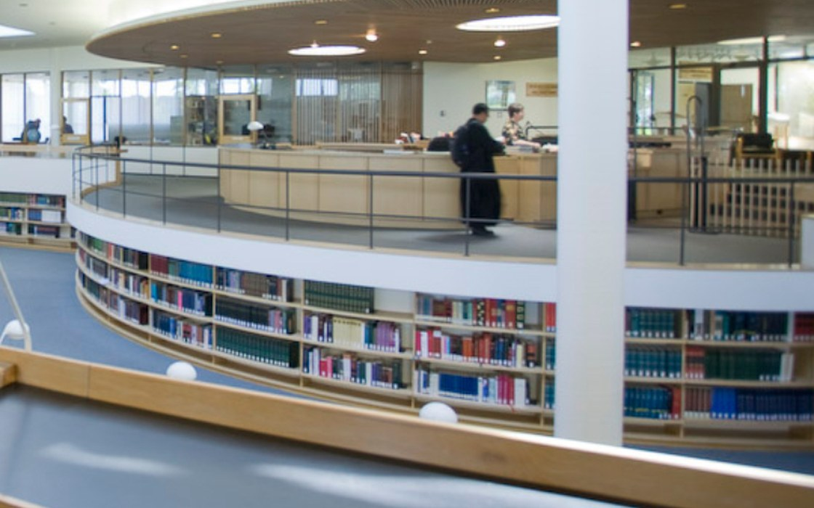
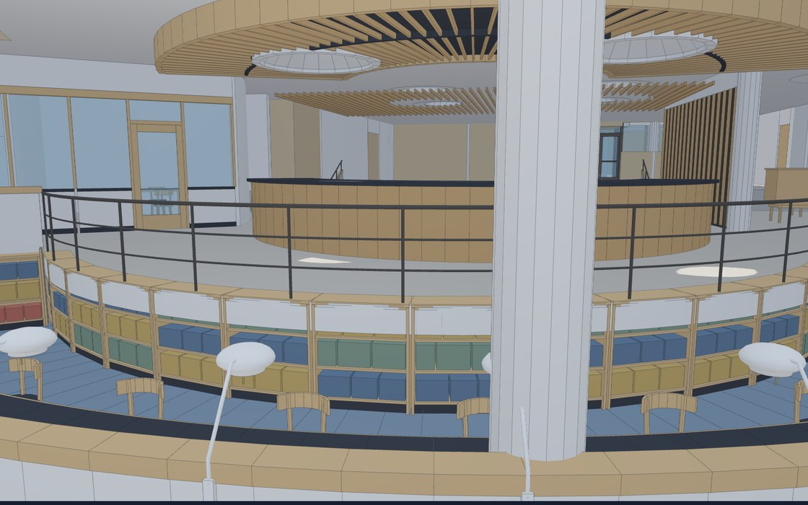
WP_DESK circulation drum, add_tubular_arc_railing_ft, and add_aalto_curved_bookwall_ft.# Curved slatted-birch Control Desk + overhanging black linoleum counter around WP_DESK add_arc_band_ft(mesh, G.WP_DESK, G.R_DESK_INNER, G.R_DESK_OUTER, 28.0, 162.0, z_l3, z_l3 + 1.02, slat_furn) add_arc_band_ft(mesh, G.WP_DESK, G.R_DESK_INNER - 0.20, G.R_DESK_OUTER + 0.25, 28.0, 162.0, z_l3 + 1.02, z_l3 + 1.07, lino_furn) # Open 3-rail dark-bronze tubular steel guardrail (+0.91 m top rail, +0.61 m & +0.32 m mid-rails) for z_rel, r_tube in ((0.91, 0.020), (0.61, 0.011), (0.32, 0.011)): add_polytube_m(mesh, [(x, y, z_floor_m + z_rel) for x, y in arc_xy_m], r_tube, rail_mat, sides=8)